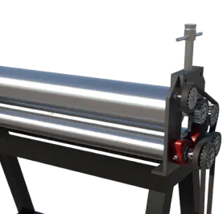

ООО «ВоронежТехМонтаж» предлагает Вам услуги промышленной металлообработки на заказ.
Помимо обработки металла, мы также можем предложить производство металлических конструкций
на заказ с доставкой. Благодаря наличию станков современного поколения задачи любой сложности
выполняются качественно и железно в сроки, а процент брака крайне мал, как и производственные издержки.
Металлообработка дает возможность разгрузить производственные мощности металлообрабатывающих предприятий
при возникновении необходимости срочного изготовления большого объема металлопродукции.
Список услуг по металлообработке

Гибка металлопроката
Осуществляем гибку листового металлопроката на гидравлическом ЧПУ прессе.
Процесс гибки позволяет избежать на необходимых конструкциях сварных швов,
что делает конструкцию более прочной и долговечной. Мы осуществляем гибки
листового металлопроката следующих параметров:
Рубка металлопроката гильотиной позволяет осуществлять раскрой листового и полосового
металлопроката толщиной до 25 мм. Раскрой металлопроката гильотиной позволяет добиться
снижения количества отходов при заготовке деталей не сложных форм,
что позволяет экономить средства наших заказчиков.
ООО «ВоронежТехМонтаж» осуществляет вальцовку листового металлопроката –
пластическую равномерную деформацию листа под давлением. Выполняем вальцовку в форме
обечаек, бандажей, конусов, труб различной конфигурации.
Мы выполняем плазменную резка металлопроката – вид обработки металла,
позволяющий получить из листового проката детали различных сложных форм.
Можем выполнить раскрой как по готовым чертежам и CAD-файлам деталей заказчика,
так и подготавливаем материал самостоятельно. Данный вид резки позволяет быстро
и точно выполнить изготовление необходимых деталей.
Газовая ЧПУ резка металлопроката – вид обработки металла, позволяющий получить из листового
проката детали различных сложных форм. Можем выполнить раскрой как по готовым чертежам
и CAD-файлам деталей заказчика, так и подготавливаем материал самостоятельно.
Данный вид резки позволяет быстро и точно выполнить изготовление необходимых деталей.
Заготовка материала с помощью лентопильного оборудования
ООО «ВоронежТехМонтаж» выполняет резку фасонного металлопроката на лентопильном станке
– обработка труб, швеллеров, балок, уголков при помощи ленточной пилы.
Изготовление виктков шнека либо шнекового вала в сборе
Производим на заказ шнеки различных размеров по чертежам заказчика.
Наше оборудование позволяет изготавливать витки шнека с внешним диаметром
до 1 м и толщиной пера до 20 мм. Также мы можем изготовить готовые шнеки на заказ
различной длины и сплавов – ч/м, 09г2с, нержавеющая сталь.